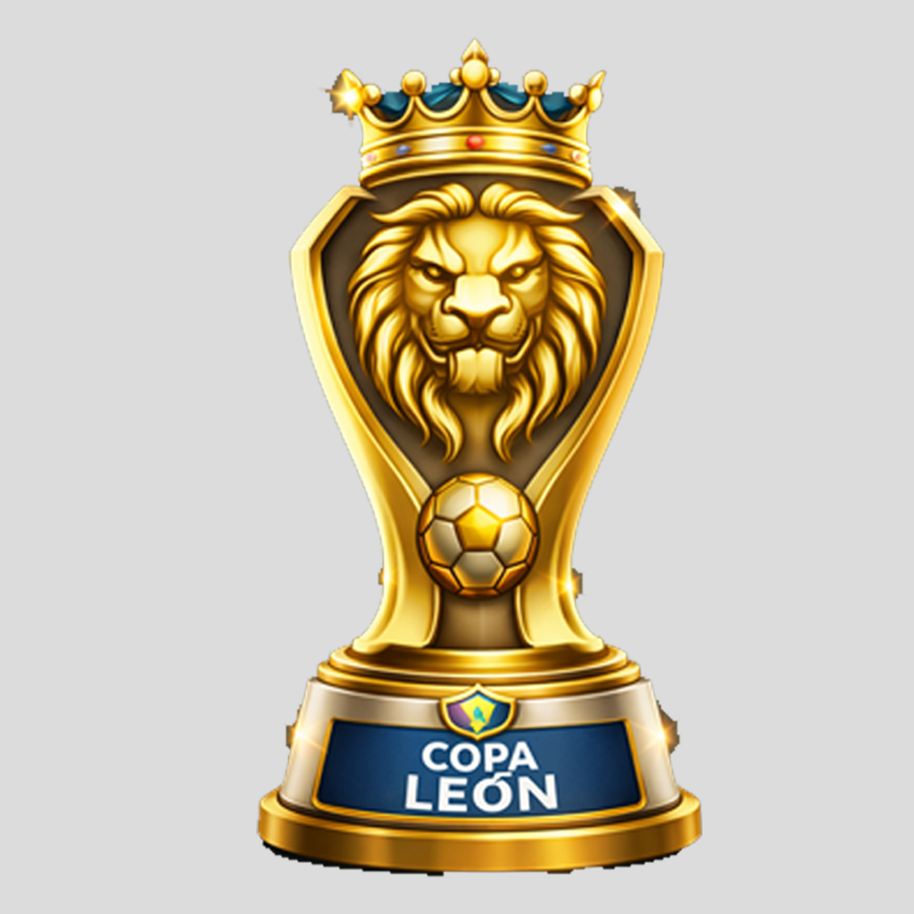

Copa Leon - 2026/1
Painel Competições
Primeira Fase
Oitavas
Quartas
Semifinal
Final
🕒 Copa Leon ainda não começou
Os confrontos serão exibidos quando os jogos da Rodada 1 começarem.
Vencedor
Placares pendentes